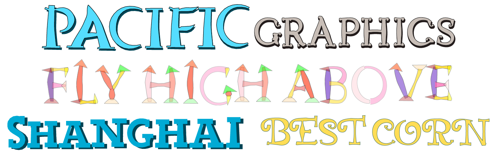
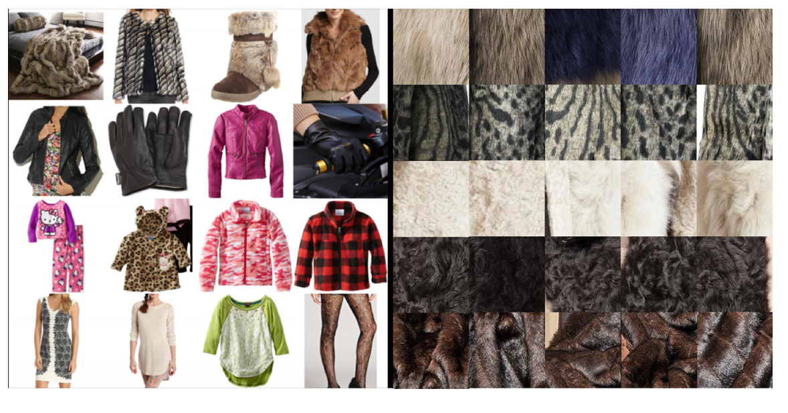
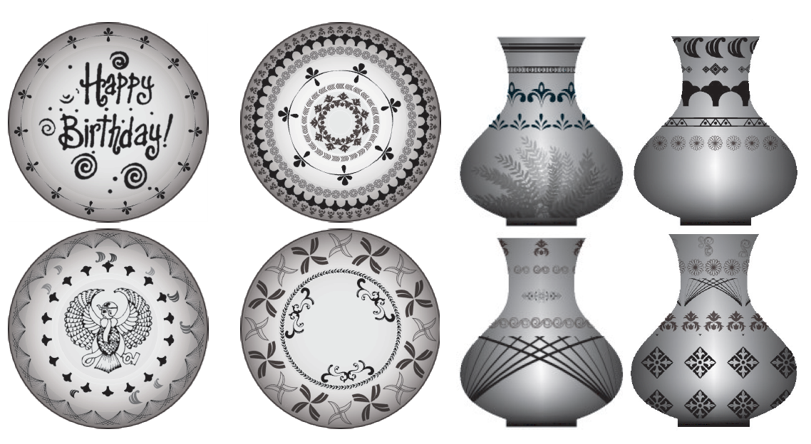

Huy Phan, Ph.D in Creative Media
| Image | Title and Summary |
|---|---|
|  | FlexyFont: Learning Transferring Rules for Flexible Typeface Synthesis URI: http://dx.doi.org/10.1111/cgf.12763 Abstract: Maintaining consistent styles across glyphs is an arduous task in typeface design. In this work we introduce Flexy- Font, a flexible tool for synthesizing a complete typeface that has a consistent style with a given small set of glyphs. Motivated by a key fact that typeface designers often maintain a library of glyph parts to achieve a consistent typeface, we intend to learn part consistency between glyphs of different characters across typefaces. We take a part assembling approach by firstly decomposing the given glyphs into semantic parts and then assembling them according to learned sets of transferring rules to reconstruct the missing glyphs. To maintain style consistency, we represent the style of a font as a vector of pairwise part similarities. By learning a distribution over these feature vectors, we are able to predict the style of a novel typeface given only a few examples. We utilize a popular machine learning method as well as retrieval-based methods to quantitatively assess the performance of our feature vector, resulting in favorable results. We also present an intuitive interface that allows users to interactively create novel typefaces with ease. The synthesized fonts can be directly used in real-world design. |
|  | Look Closely: Learning Exemplar Patches for Recognizing Textiles from Product Images URI: http://dx.doi.org/10.1007/978-3-319-16865-4_30 Abstract: The resolution of product images is becoming higher dues to the rapid development of digital cameras and the Internet. Higher resolution images expose novel feature relationships that did not exist before. For instance, from a large image of a garment, one can observe the overall shape, the wrinkles, and the micro-level details such as sewing lines and weaving patterns. The key idea of our work is to combine features obtained at such largely different scales to improve textile recognition performance. Specifically, we develop a robust semi-supervised model that exploits both micro textures and macro deformable shapes to select representative patches from product images. The selected patches are then used as inputs to conventional texture recognition methods to perform texture recognition. We show that, by learning from human-provided image regions, the method can suggest more discriminative regions that lead to higher categorization rates. We also show that our patch selection method significantly improves the performance of conventional texture recognition methods that usually rely on dense sampling. Our dataset of labeled textile images will be released for further investigation in this emerging field. |
|  |
URI: http://dx.doi.org/10.2312/exp.20161066 Abstract: Creating aesthetically pleasing decorations for daily objects is a task that requires deep understanding of multiple aspects of object decoration, including color, composition and element compatibility. A designer needs a unique aesthetic style to create artworks that stand out. Though specific subproblems have been studied before, the overall problem of design recommendation and synthesis is still relatively unexplored. In this paper, we propose a flexible data-driven framework to jointly consider two aspects of this design problem, style compatibility and spatial composition.We introduce a ring-based layout model capable of capturing decorative compositions for objects like plates, vases and pots. Our layout representation allows the use of the hidden Markov models technique to make intelligent design suggestions for each region of a target object in a sequential fashion. We conducted both quantitative and qualitative experiments to evaluate the framework and obtained favorable results. |